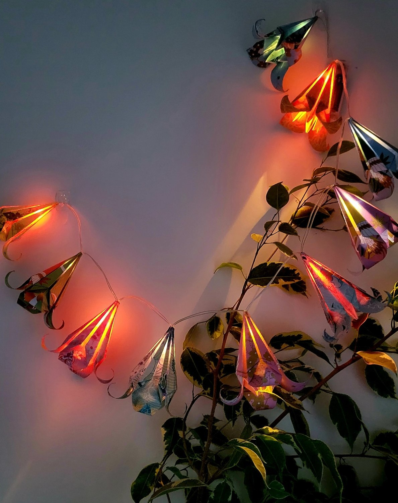
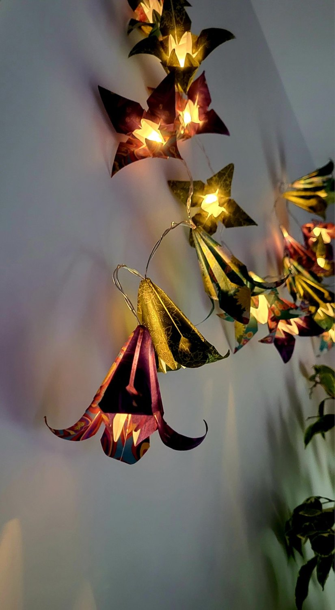
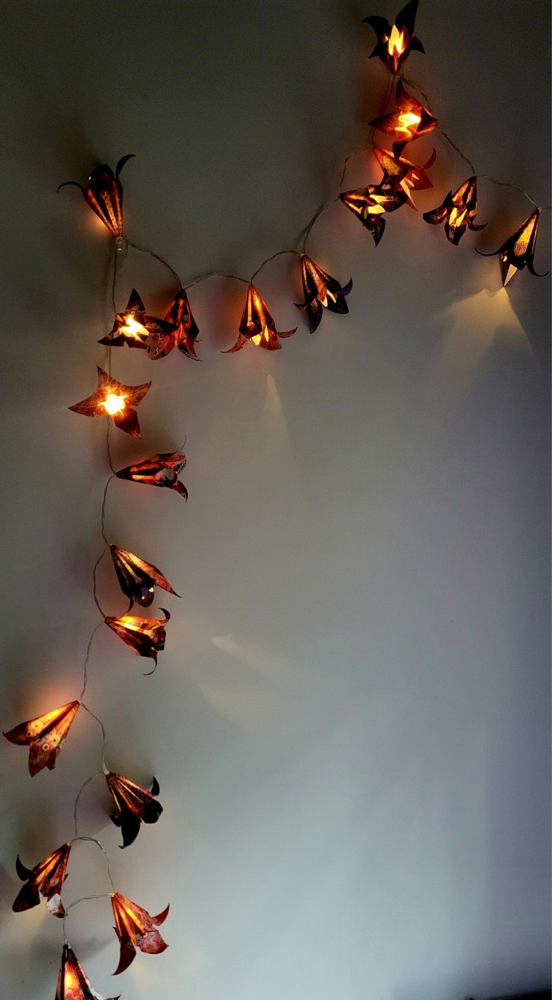
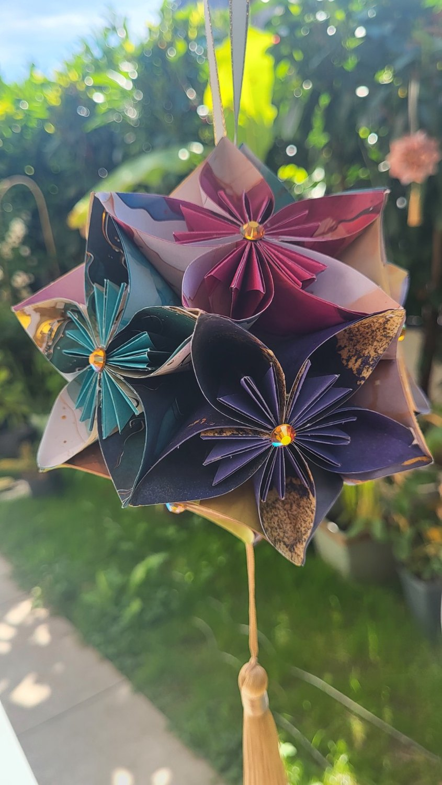
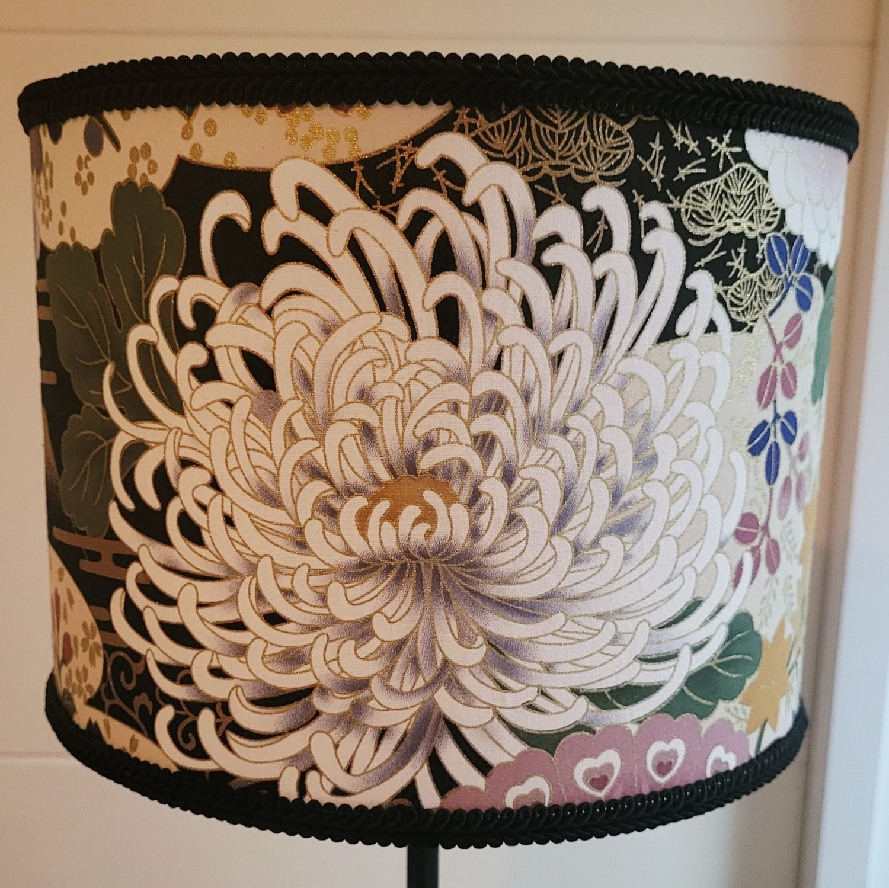
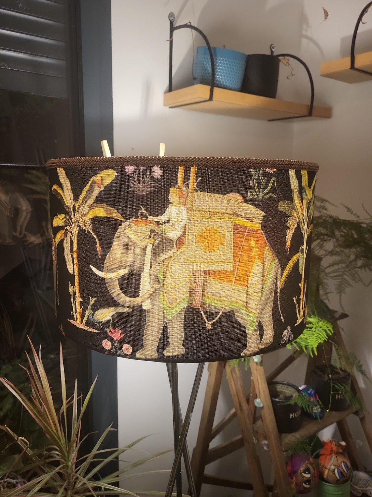
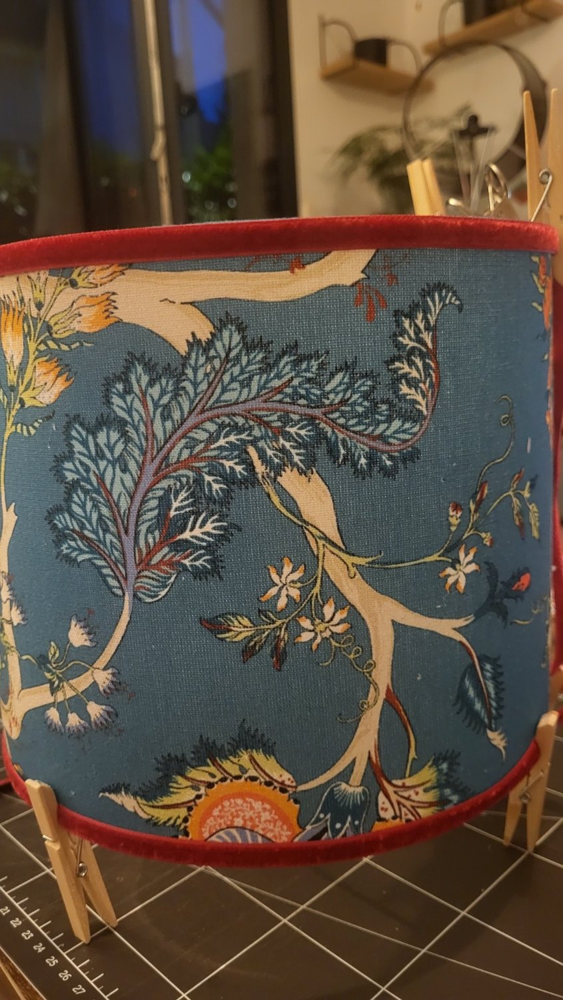

Guirlande lumineuse
Jardin tropical
Des fleurs généreuses, des couleurs franches et une lumière qui révèle le papier autrement.
Découvrir sur Etsy →Des pièces réalisées une à une, où le papier, le tissu et la lumière se répondent. Chaque modèle porte ses propres couleurs, ses propres détails et la trace du geste qui l’a façonné.
Des fleurs de papier décoratives même éteintes, puis transformées lorsque la lumière les traverse.

Des fleurs généreuses, des couleurs franches et une lumière qui révèle le papier autrement.
Découvrir sur Etsy →
Une composition sombre et précieuse, ponctuée d’éclats dorés et de lumière chaude.
Découvrir sur Etsy →
Des rouges profonds et des violets intenses pour une lumière intime, presque théâtrale.
Découvrir sur Etsy →Des assemblages de fleurs pliées une à une, conçus comme de petits objets précieux à suspendre.
Une composition douce, ponctuée de perles nacrées et d’un long pompon doré.
Découvrir sur Etsy →
Des fleurs aux nuances profondes, assemblées comme un bouquet suspendu et rehaussées d’éclats de lumière.
Découvrir sur Etsy →Des tissus choisis pour leur présence. Éteints, ils habillent la pièce ; allumés, ils en changent l’atmosphère.

Un motif monumental, encadré de noir, qui révèle toute sa finesse une fois éclairé.
Voir la boutique Etsy →
Une scène riche et narrative, soulignée par un galon brun aux reflets discrets.
Voir la boutique Etsy →
Un bleu profond traversé de branches claires, réveillé par une finition framboise.
Voir la boutique Etsy →Chaque création porte la trace du geste qui prend son temps et qui suit la matière.
C’est ce qui la rend imparfaitement unique.